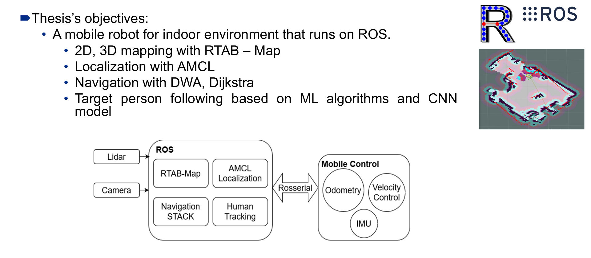
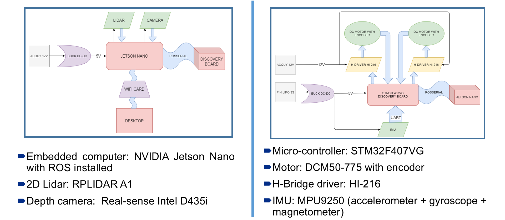
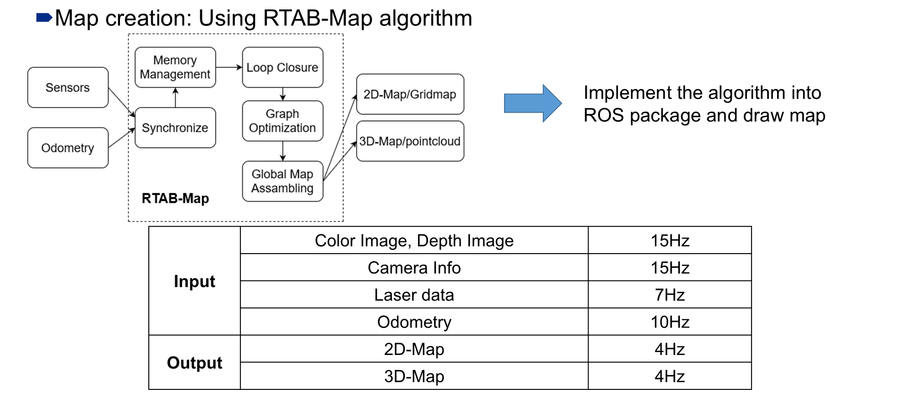
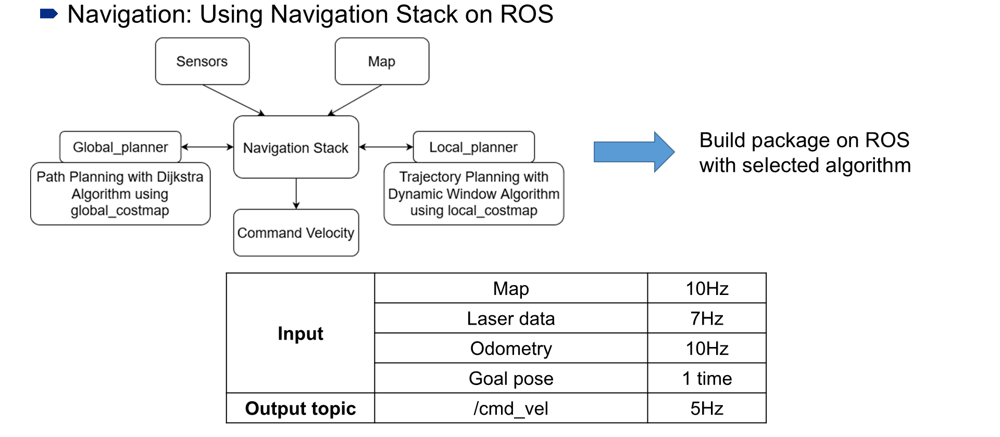
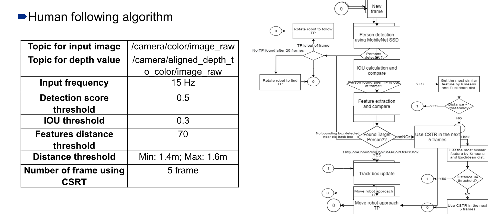
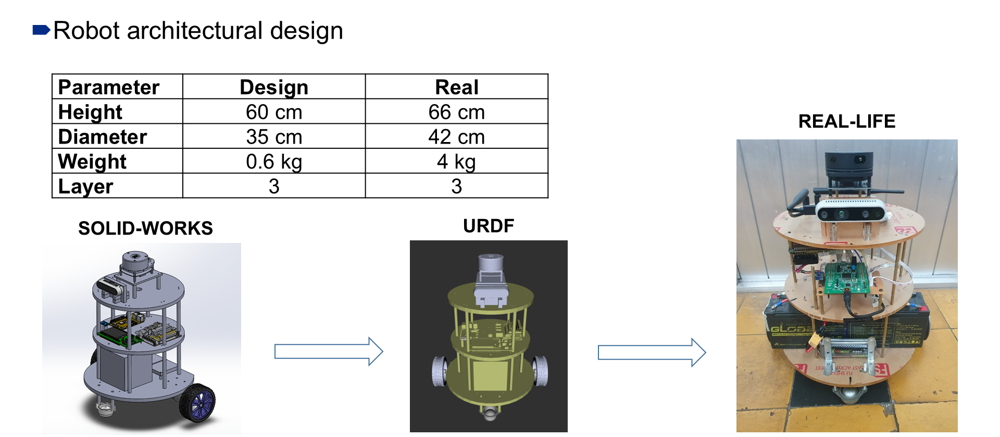
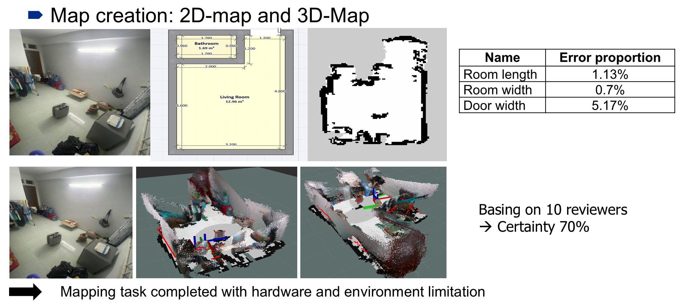
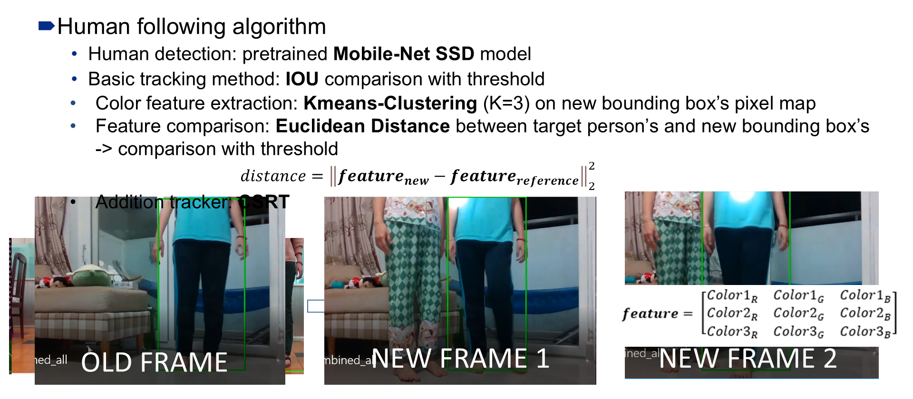

ACADEMIC · AUTONOMIC CONTROL LAB, HCMUT
Mobile Robot with 3D SLAM & Deep Learning
Architecture
A three-wheel mobile robot running ROS1 on an NVIDIA Jetson Nano, built around four subsystems — mapping (RTAB-Map), localization (AMCL), navigation (Dijkstra global planning + Dynamic Window local planning), and human following (MobileNet-SSD detection with color-feature re-identification) — all fed by a 2D lidar, an RGB-D camera, and wheel/IMU odometry, and issuing velocity commands to the motor controller over rosserial.


Odometry is fused from two sources: the STM32 combines encoder counts with orientation from a Madgwick filter (IMU gyroscope + accelerometer + ellipsoid-calibrated magnetometer) running in the earth frame, while the Jetson Nano independently estimates motion from lidar scan-matching.


Human following runs as a state machine: MobileNet-SSD detects people each frame; a new detection is matched to the tracked target by IOU, or — if the target left the frame — by comparing K-means (k=3) color-cluster features via Euclidean distance against a threshold; a CSRT visual tracker bridges up to 5 frames when detection momentarily fails, before the robot rotates and drives to keep the target at a fixed distance.

Full implementation: github.com/hxnghia99/thesis_robot
Demo
From SolidWorks design to URDF simulation model to the physical build:

Mapping a real room: reference photos, the resulting 2D floor plan and occupancy grid, and the 3D point-cloud reconstruction:

The human-following tracker maintaining identity across frames using color features (values shown are the Euclidean distance to the reference, compared against the threshold):

Performance
Measured on the physical robot in a real indoor room (RMS = root-mean-square error against ground truth):
| Task | RMS error x (m) | RMS error y (m) | RMS error yaw |
|---|---|---|---|
| Localization (AMCL) | 0.0599 | 0.0177 | 9.16° (0.1598 rad) |
| Navigation (move to goal) | 0.0346 | 0.0355 | 7.86° (0.1372 rad) |
| Dimension | Error |
|---|---|
| Room length | 1.13% |
| Room width | 0.70% |
| Door width | 5.17% |
| Precision | Recall | F1-score | Frame rate | Max. continuous lost time |
|---|---|---|---|---|
| 75.0% | 81.08% | 77.92% | ≈7 FPS | ≈10 s (≈65 frames) |
| Rise time | Settling time | Steady-state error | Overshoot | PWM freq. | Gains (Kp, Ki, Kd) |
|---|---|---|---|---|---|
| 1 s | 1.5 s | 0 | 0 | 10 kHz | 4.5, 9, 0.15 |
Honest limitations observed: the human-tracker's color features struggle when the target wears similar colors to the background or other people; end-to-end latency (hardware headroom on the Jetson Nano and un-optimized Python code) capped tracking at ≈7 FPS; and localization/mapping accuracy was ultimately limited by lidar and IMU noise.
Evidence
Sensor and ROS node I/O rates, as measured on the running system:
| Topic / node | Rate |
|---|---|
| Lidar scan (RPLIDAR A1, 0.15–3.5 m, 0.5° resolution) | 7 Hz |
| Camera (color + depth, RealSense D435i) | 15 Hz |
| Odometry / TF (from STM32) | 10 Hz |
| RTAB-Map 2D / 3D map output | 4 Hz |
| AMCL pose / particle cloud | 7 Hz |
| Navigation command velocity | 5 Hz |
Full source and the graduation thesis (“Application of SLAM Algorithm and Computer Vision for Autonomous Indoor Robot”) code are in the repository: